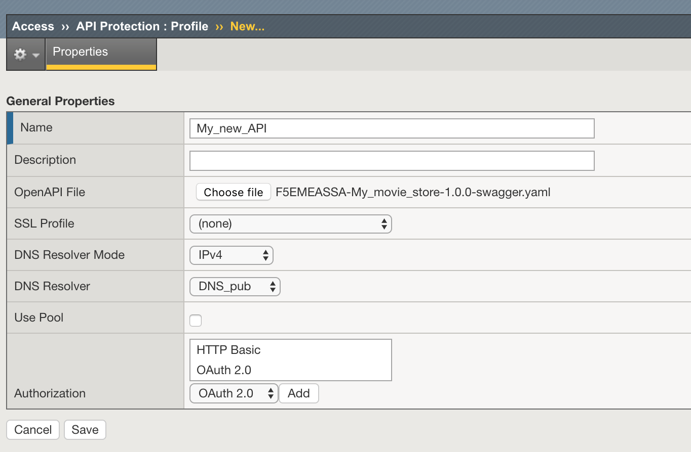
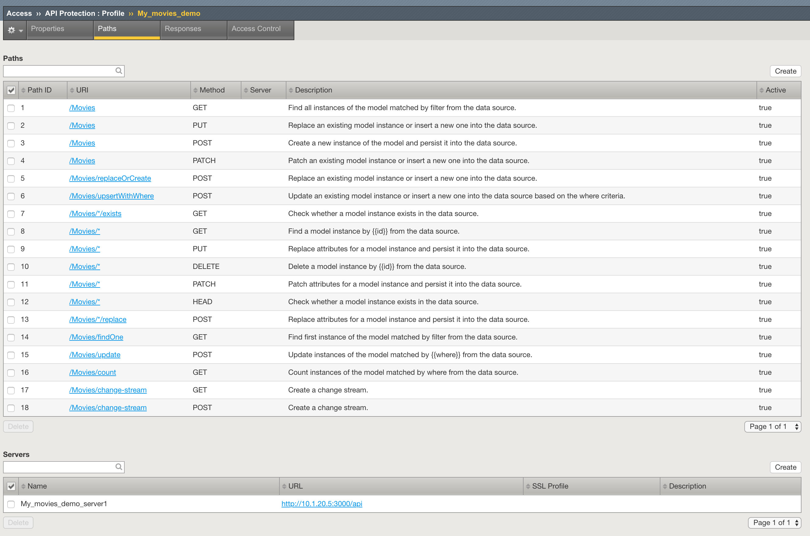
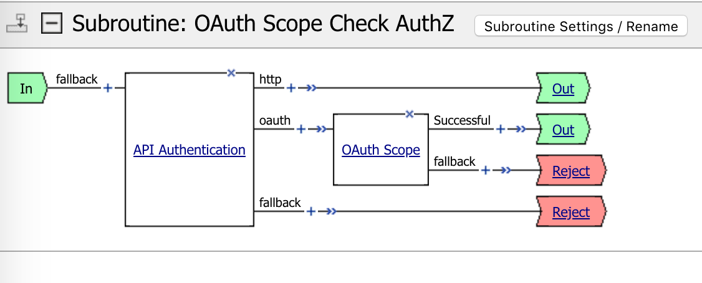
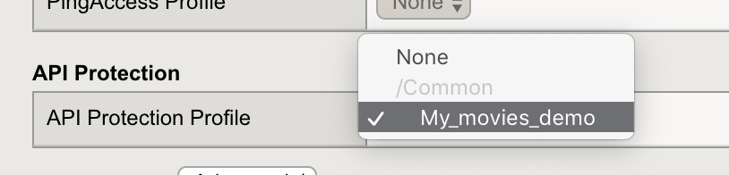
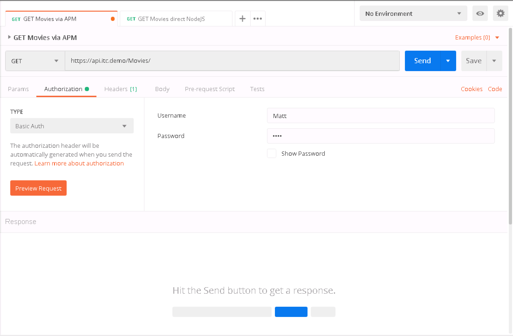
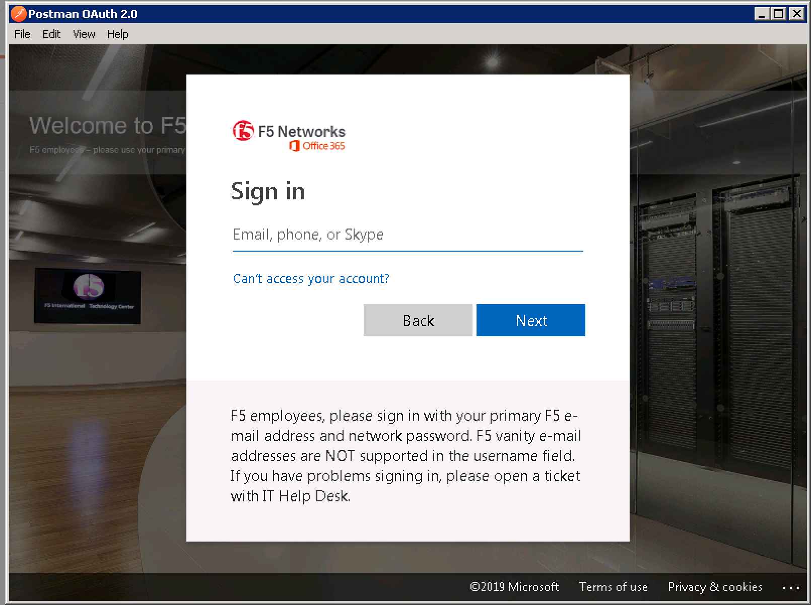

Configure the BIGIP APM¶
Import the OpenAPI file¶
In Access > API Protection, create a new profile.
Note
You will need the OpenAPI file from the API server. There is a command line in order to extract the Swagger file from the Loopback server. But to simplify the demo, you can find this swagger file on this link : https://app.swaggerhub.com/apis/F5EMEASSA/My_movie_store/1.0.0 If you want to extract by yourself, this is the command line below.
$ lb export-api-def -o My_movies.yaml
Now, you should see the API configuration extracted from the swagger file. All is configured automatically.
Click on Access Control tab and edit the Per Request Policy.
Modify the Per Request policy¶
You have to configure the PRP for the authentication. API supports HTTP (Authorization header for Basic auth, and Oauth v2). Terminate the branch HTTP by an Allow.
Assign the profile to the VS¶
Assign the new profile to your VS. It is a new profile, not part of Access configuration.
Test your API protection with APM¶
Now, open Postman, and test with a Basic Authorization. Put any values for the username and password.
Second test, use Oauthv2 with OpenID connect. The APM has a configuration to validate JWT token from AzureAD. In this lab, we use the F5 corporate AzureAD tenant, so you can test with your own corporate account. Select Oauth 2.0, and GET NEW ACCESS TOKEN, click on Request Token. Fill the logon pages fields.
Now, you should have a token. Select it into the menu “Available Tokens” and click on “Preview Request”. And send the request. It should pass.
Note
Now you can configure every branch (GET, POST …) for every URI in order to allow or block requests. I let you discover the solution and test it by yourself. Enjoy.